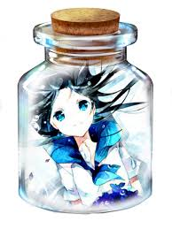

AnimeIsLife
Home
Search
Favourite
Later
Read
Exit

Владыка Вермилиона: Король алого лотоса / Lord of Vermilion: Guren no Ou
Жанр: приключения, фэнтези Дата выхода: c 14.07.2018 Длительность: 25мин. Описание: Случилось это в Токио, 29 января 2030 года. Высокочастотный резонанс наблюдается в окрестностях Токио, и красный туман движется в город. Те, кто слышит звук, как люди, так и животные, теряют сознание. Все закрывается в Токио, полагая, что туман несет неизвестный вирус, который вызывает эпидемию. Однако через шесть дней, после инцидента, люди просыпаются, как ни в чем не бывало. После этого изолированные городские районы Токио постепенно нормализуются. Однако из-за высокочастотного резонанса начинают происходить некоторые «причудливые события», и люди оказываются втянутыми в более загадочные тайны. Между тем молодые люди начинают осознавать себя и освобождать свою силу, спрятанную в их крови, открывая себя как «сосуд мудрости». Вместе, руководствуясь чем-то неизвестным, они встречаются, общаются и сталкиваются с неизбежным кругом судьбы, жертвуя своей жизнью.